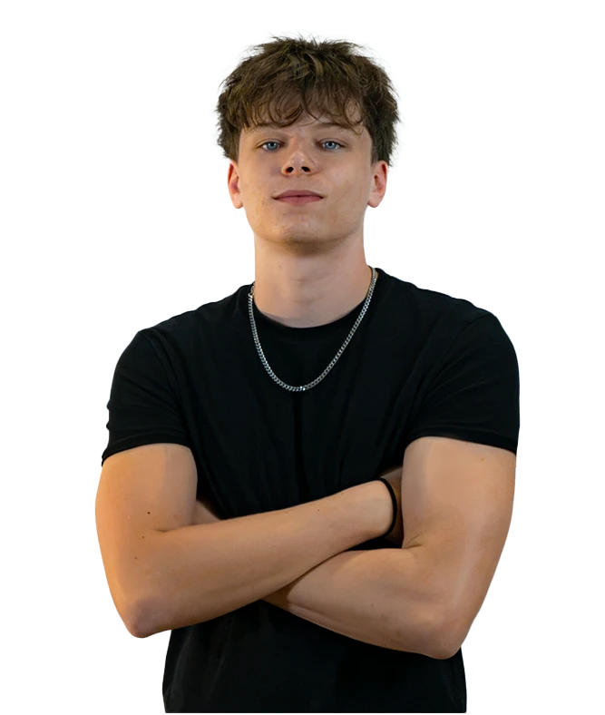

École obligatoire
MézièresCollège du Raffort
Graphic designer

De l'école obligatoire à Mézières au CFC de médiamaticien au CPNV de Sainte-Croix.
Fond de carte © swisstopo · OFEV
Collège du Raffort
Lausanne · 1 semaine
État de Vaud · 1 semaine
État de Vaud · 1 semaine
Sainte-Croix · CFC de médiamaticien
LT Design · graphiste indépendant, en parallèle des cours
Une identité visuelle, une affiche, un visuel sport ou un projet print ? Racontez-moi votre idée, je vous réponds sous 48 h.